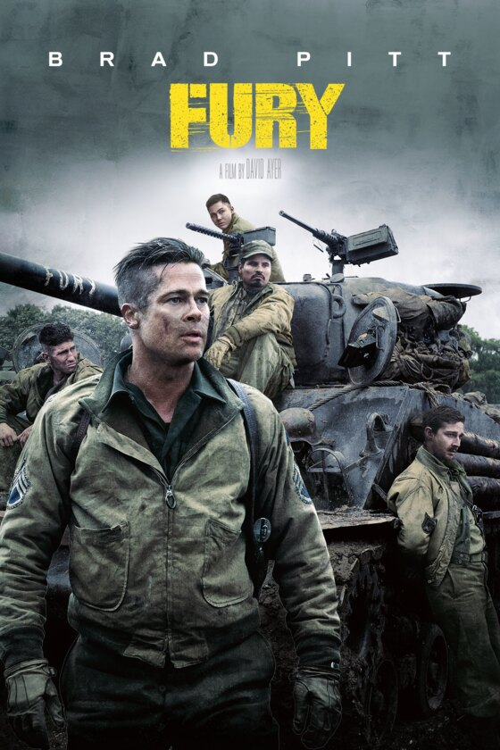
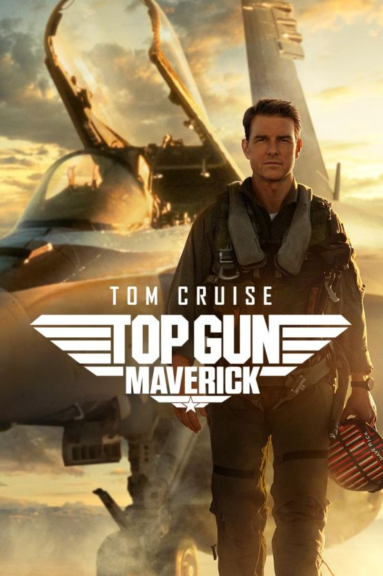
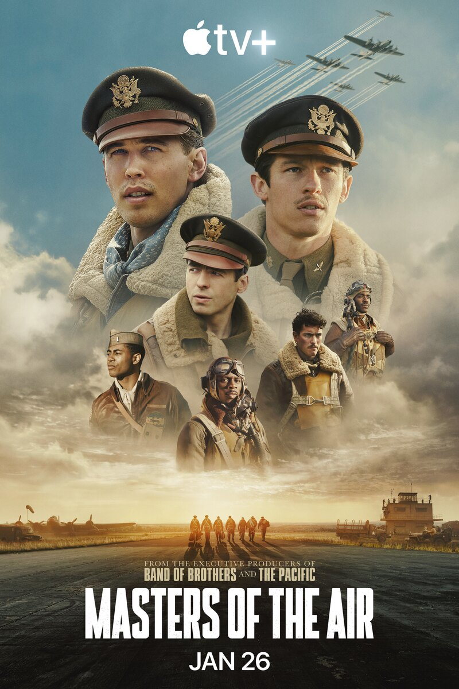

Película · tanques
Fury
Me atrae que Fury cuente la guerra desde un Sherman y su tripulación. Me interesa tanto el vehículo como la relación entre quienes lo manejan.
Ver fuente oficial Jorge Puente García
Jorge Puente García
Me gusta ver cómo el cine y las series cuentan historias alrededor de tanques y aviones. Estas son tres obras que me llaman la atención; desliza para conocerlas.
1 de 3

Película · tanques
Me atrae que Fury cuente la guerra desde un Sherman y su tripulación. Me interesa tanto el vehículo como la relación entre quienes lo manejan.
Ver fuente oficial
Película · aviación
Cuando una película pone los cazas en primer plano, me fijo en cómo muestra el vuelo. Por eso me interesa Top Gun: Maverick.
Ver fuente oficial
Serie · aviación
Me llama la atención seguir a los aviadores del 100.º Grupo de Bombardeo y ver qué hay detrás de sus misiones, más allá de los aviones.
Ver fuente oficial